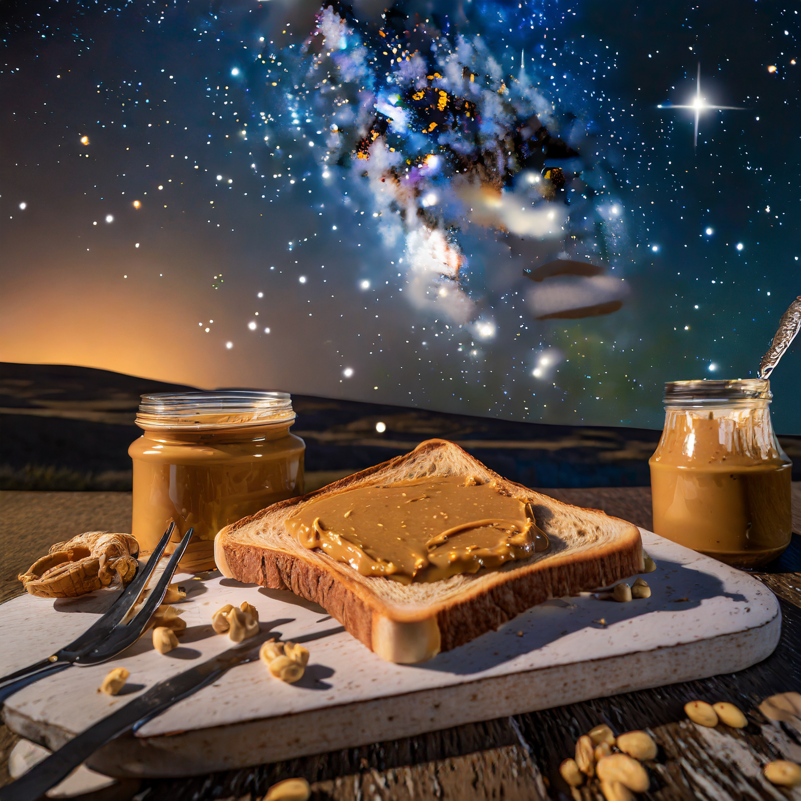

Peanut Butter Toast

Description
A simple and delicious toasted classic.
Warm sourdough bread lightly covered with a crunchy peanut butter topping.
Ingredients
- Adam's crunchy peanut butter
- Sourdough bread (preferably from Bread By Us bakery)
Steps
- Place two slices of bread in a toaster. Toast to taste.
- Cover bread with peanut butter using a butter knife. Don't over do it!
- Enjoy!